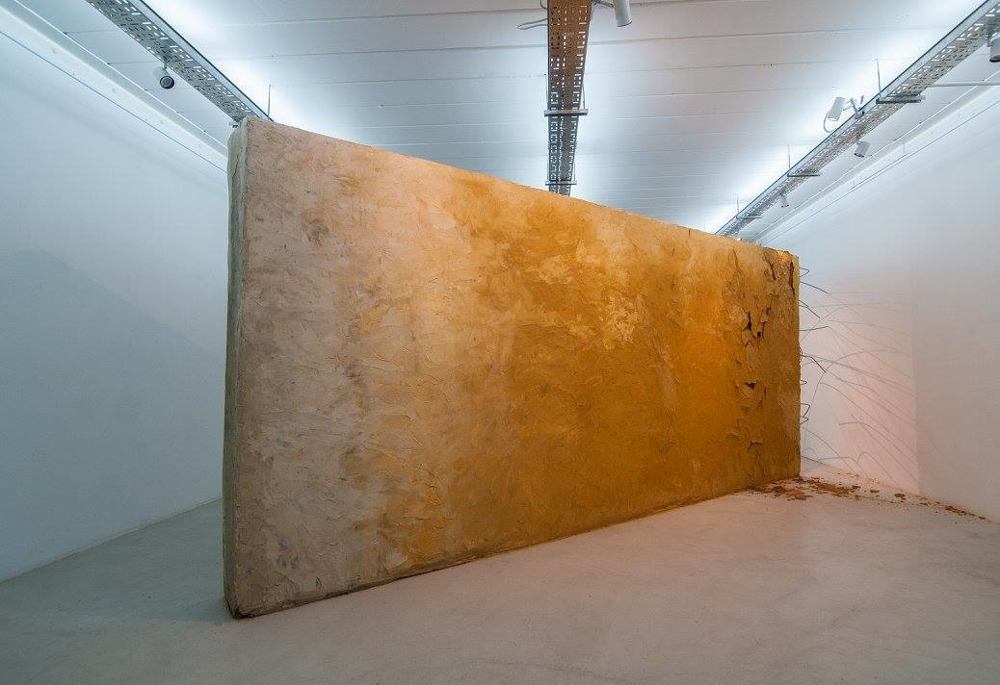
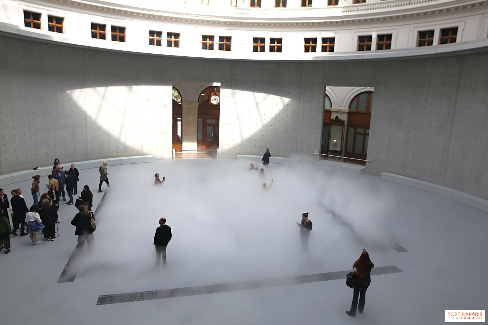
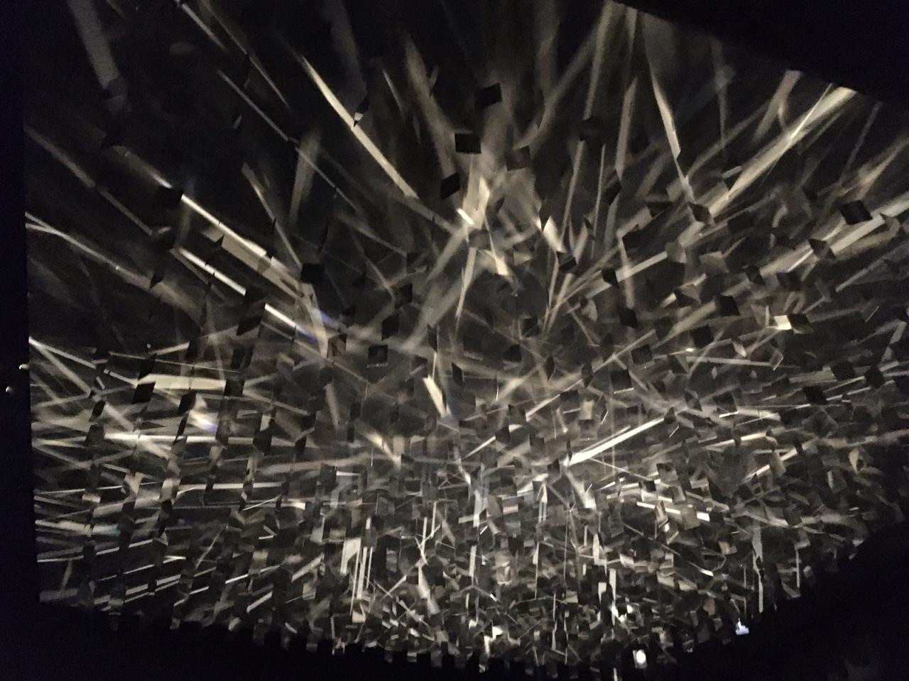

Fundamentación y Selección de Obras
La selección de las piezas que integran esta exposición responde a la construcción de un recorrido espacial pensado paso a paso. Cada obra funciona como una estación clave dentro de un proceso de aprendizaje: el paso inevitable desde la confusión y el desconcierto inicial hasta la claridad y la comprensión final.
1. Módulo Derrumbe
Autor: [Juan Sorrentino] — 2016
Se ubica en la entrada porque es una estructura pesada, áspera y opaca. Representa perfecto el punto de partida de cualquier proceso de conocimiento: el choque contra la complejidad del tema y aquello que todavía no logramos descifrar. Al estar colocado de forma oblicua a 45° en la planta, rompe la línea recta de la sala y obliga al visitante a esquivarlo desde el primer segundo.
2. Fog Sculpture
Autor: Nakaya, Fujiko — 1970
Se ubica en el trayecto intermedio para introducir la idea de inestabilidad. A diferencia del peso de la estación anterior, acá la materia se vuelve una niebla en suspensión, lo que traduce visualmente la duda y la vacilación del pensamiento cuando todavía no hay certezas firmes a las cuales agarrarse.
3. Luz Continua
Autor: Julio Le Parc — 1962
Situada en el techo, esta obra original retoma el legado histórico del cinetismo. Su presencia marca el punto de inflexión donde la duda empieza a aflojar frente al movimiento y la claridad, actuando como un recurso visual que orienta y empuja al espectador hacia adelante.
4. Asiento / Puf Central
Diseño: Grupo 4 (UNM) — 2026Se ubica estratégicamente bajo la iluminación cenital como una invitación a la pausa. Representa el momento de detención necesario para procesar y asimilar la información antes de encarar el último tramo del recorrido.
5. Singularity
Autor: [James Turrell] — [2007]Cierra la experiencia en el fondo de la sala concentrando un haz de luz cálida sobre un panel de vidrio. Su elección es fundamental para evitar que la caja oscura se sienta como un espacio cerrado o asfixiante: funciona como una ventana que conecta el interior con el exterior, revelando el entorno natural del campus de la Universidad Nacional de Moreno (UNM) y cerrando la unión entre arte, arquitectura y realidad.